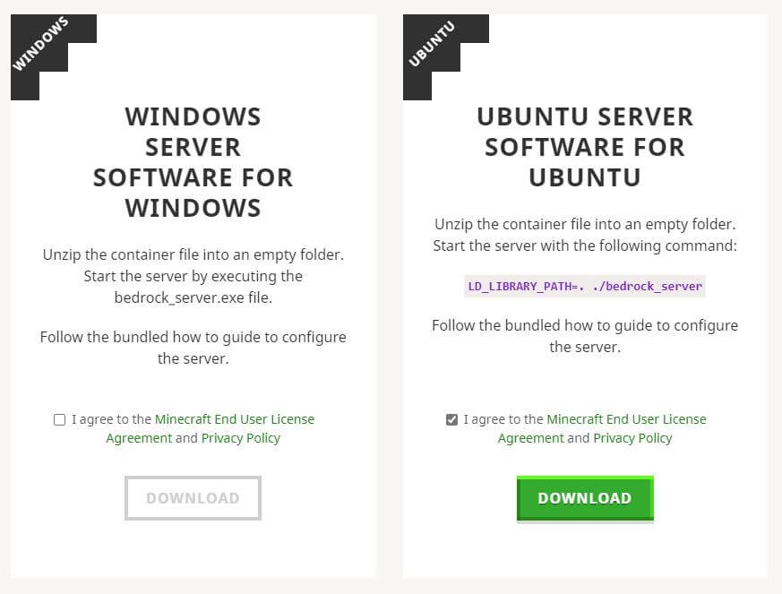
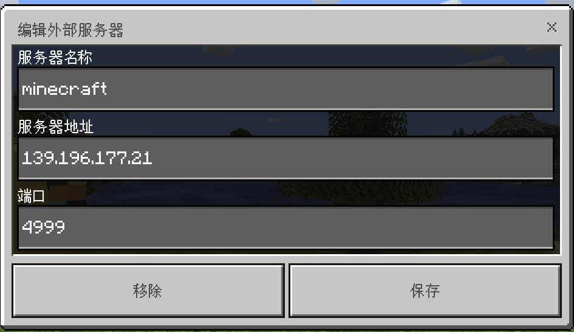

Minecraft Bedrock Edition 也就是我的世界基岩版，这是 Minecraft 的另一个版本。Minecraft 基岩版可以运行在 Win10、Android、iOS、XBox。基岩版不能使用 Java 版的服务器，Java 版也不能使用基岩版的服务器，不过 Win10、Android、iOS、XBox 的基岩版都可以使用同一个服务器，也就是说基岩版的服务器可以让 Win10 和手机一起联机。
目前基岩版的服务器还是测试版，因为不是用 Java 编写的，所以目前只能在 Windows 和 Ubuntu 上搭建。
我使用的是阿里云的轻量应用服务器，配置是 1 核 2 G，使用的系统是 Ubuntu 18.04。
下载
可以进入 https://www.minecraft.net/en-us/download/server/bedrock/ 下载服务器，目前只有 Windows 和 Ubuntu 两个版本。

下载之前需要选中 I agree to the Minecraft End User License Agreement and Privacy Policy。你可以下载到本地电脑，然后通过 SFTP 上传到服务器，也可以右击 DOWNLOAD 复制链接地址，直接通过 wget 下载到服务器。
一般情况下官网默认就是最新版本的服务端，我下载的服务端版本是 1.14.32.1，客户端版本是 14.30，在游戏主界面的右下方可以查看版本。如果客户端版本比服务端版本低的话可以更新到最新版本，Win 10 可以在应用商店更新。
下载的压缩包中还会包含一个 bedrock_server_how_to.html，这就是服务器的帮助文档，建议可以下载一份服务端到本地电脑，方便查看帮助文档。
运行
下载的服务端可能是一个 zip 格式的压缩包，先解压：
unzip bedrock-server-1.14.32.1.zip上面的命令是把文件解压到当前目录，其中的 bedrock-server-1.14.32.1.zip 就是压缩包的名称。
如果解压的时候出现：
Command 'unzip' not found
可以输入：
apt install -y zip安装 zip。
基岩版的服务端还需要依赖 libcurl4-openssl-dev，安装 libcurl4-openssl-dev：
apt install -y libcurl4-openssl-dev安装完成后输入：
LD_LIBRARY_PATH=. ./bedrock_server启动服务器。
启动后会输出状态信息，如下：
NO LOG FILE! - setting up server logging...
[2020-04-02 20:50:22 INFO] Starting Server
[2020-04-02 20:50:22 INFO] Version 1.14.32.1
[2020-04-02 20:50:22 INFO] Session ID 08940d5f-f2da-4da8-9130-c7e59f580559
[2020-04-02 20:50:22 INFO] Level Name: Bedrock level
[2020-04-02 20:50:22 INFO] Game mode: 1 Creative
[2020-04-02 20:50:22 INFO] Difficulty: 0 PEACEFUL
[2020-04-02 20:50:22 INFO] opening worlds/Bedrock level/db
[2020-04-02 20:50:25 INFO] IPv4 supported, port: 4999
[2020-04-02 20:50:25 INFO] IPv6 not supported
[2020-04-02 20:50:25 INFO] IPv4 supported, port: 19132
[2020-04-02 20:50:25 INFO] IPv6 not supported
[2020-04-02 20:50:27 INFO] Server started.服务器默认的端口是 19132，协议是 UDP ，不是 TCP，开放端口的时候需要注意一下。
客户端连接
打开 Minecraft 基岩版，选择 游戏，选择 服务器，点击 添加，按照提示输入服务器 IP 和端口号。
如下：

如果没有修改过配置文件的话，默认的端口号是 19132。
进入服务器之前需要登录 Xbox Live，只有账户中有 Minecraft 才能联机。
配置
服务端解压后会包含一个名为 server.properties 的配置文件，服务器相关的配置就在这个配置文件中。
可以用 VI 之类的编辑器打开配置文件编辑，关于 VI 编辑器的使用可以看 Linux VI 编辑器简单使用教程 。
配置文件中的 # 开头的行是注释，可以不用管，主要就是修改 = 后面的内容。
下面是一些配置项说明：
gamemode：默认的游戏模式，survival生存，creative创造，adventure冒险。difficulty：默认难度，peaceful和平，easy简单，normal普通，hard困难。max-players：玩家数量限制，默认为10。server-port：服务器端口，默认为19132。server-portv6：IPv6 端口，默认为19133。online-mode：正版验证，如果你的服务器可以正常连接到 Xbox Live 的话，可以设置为true，否则可以设置为false，即便不开启正版验证，客户端也需要登录 Xbox Live 才能联机。white-list：白名单，只有在白名单中的玩家才能进入服务器，默认为false。allow-cheats：允许作弊，默认为false。player-idle-timeout：自动踢出挂机玩家，默认为 30 分钟。default-player-permission-level：默认玩家等级，visitor游客，member普通玩家，operator管理员。
更详细的配置说明可以查看帮助文档。
白名单配置
服务端解压后会包含一个 whitelist.json 文件，这就是储存白名单的文件，格式如下：
[
{
"name": "name1",
"ignoresPlayerLimit": "true"
},
{
"name": "name2"
}
]其中的 name 是玩家的 Xbox 用户名，ignoresPlayerLimit 是忽略服务器人数限制，ignoresPlayerLimit 是可省略的。
只有 server.properties 配置文件中的 white-list 为 true，whitelist.json 中的白名单才会生效。
如果在服务器正在运行的时候修改了白名单的话，需要在服务器命令行中输入：
whitelist.jsonwhitelist reload重新加载白名单才会生效。
设置了白名单后就只有 whitelist.json 中的玩家才能进入服务器。
后台运行
如果直接使用 LD_LIBRARY_PATH=. ./bedrock_server 启动服务器的话，退出 SSH 终端后，服务端也会停止运行。
这里可以使用 nohub 命令来启动服务端：
nohub LD_LIBRARY_PATH=. ./bedrock_server &以上就是搭建 Minecraft 基岩版服务器的过程，更详细的服务器配置和命令可以查看帮助文档。
相关文章：
最新回复